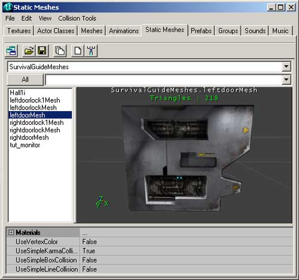
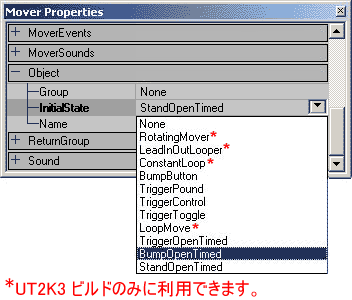
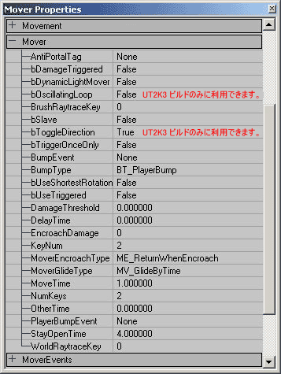

UDN
Search public documentation:
MoversTutorialJP
English Translation
한국어
Interested in the Unreal Engine?
Visit the Unreal Technology site.
Looking for jobs and company info?
Check out the Epic games site.
Questions about support via UDN?
Contact the UDN Staff
한국어
Interested in the Unreal Engine?
Visit the Unreal Technology site.
Looking for jobs and company info?
Check out the Epic games site.
Questions about support via UDN?
Contact the UDN Staff
ムーバーのチュートリアル
本書の概要: ムーバーをセットアップするためのガイドとリファレンスです。 本書の変更記録: "ReturnGroup"(リターン グループ）および "bSlave"（スレーブ）の設定を説明するために、Jason Lentz (DemiurgeStudios) により最後に更新。原著者は、Tony "Wolf" Garcia (UdnStaff)。ムーバーを作成する
ムーバーとは、ゲームプレイ中に移動できる特殊な静的メッシュのことです。ムーバーを使用すると、開くドア、エレベーター、動くプラットフォーム、回転するギアやファン、または、前もって決められたパスに沿って動くものならほとんど何でも作成できます。ムーバーを作成するには、基本的に4つのステップがあります。静的メッシュを選択、配置し、キーフレームを設定し、アクティベータを割り当て、希望する特別なムーバー効果を適用します。本書は、これらのステップを通して説明し、各タイプのムーバーの作成の仕方を明らかにします。これには、ユーザーのみなさんが、エディタについての基本知識があり、静的メッシュを作成および追加できることを前提にしています。メッシュを選択する
ムーバーは、静的メッシュでのみ作成できます。したがって、まず静的メッシュ ブラウザを開け、使用したい静的メッシュの名前を選択する必要があります。
次にムーバーをワールドに配置するために、[Add Mover]（ムーバーを追加する）https://udn.epicgames.com/pub/Two/MoversTutorialJP/MoverButton.jpg ボタンをクリックします。 ムーバーがビルダー ブラシの位置に現れます。ムーバーは、ブラシが紫色である以外は、その他のメッシュと同じように見えます。 希望する場所にムーバーを置けば、ムーバーのキーフレームを設定する準備ができたことになります
希望する場所にムーバーを置けば、ムーバーのキーフレームを設定する準備ができたことになります
キーフレームを設定する
キーフレームとは、ムーバーが移動する間の異なる位置のことです。ベース キーフレームまたはキーフレーム 0 が、他のキーフレームが設定される前は、デフォルトでムーバーの位置に設定されています。キーフレーム 0 をセットするには、ムーバーを開始したい場所に置くだけです。ムーバーを移動したい最初の位置を割り当てるためには、ムーバーを右クリックし、ムーバー オプションをプルダウンします。 [Key 1]（キー1）を選択すると、新しい最初の場所のために、キーフレームを移動したい位置と方向が記録されます。しかし、キーフレームの全回転を実際に記録するのであり、最後の方向だけを記録する訳ではないことに注意してください。もし480度回転させると、120度だけの回転ではなく、360度回転した後もう120度続けて回転します。
さらにキーフレームを作成するには、このプロセスを繰り返すだけです。右クリックによって割り当てたいキーフレームを選択し、キーフレームの望みの位置にムーバーを移動させます。キーフレームの位置をリセットしたい場合は、右クリックしてキーフレームを再選択することによりリセットできます。次に、ムーバーを正しいキーフレーム位置に移動します。
キーフレームを割り当てたら、ムーバーを右クリックしてキーフレームをチェックし、見たいキーフレームを選択できます（キーフレームを割り当てるようにして行えます）。そのキーフレームがすでに割り当てられていたら、ムーバーはその位置までジャンプします。そのキーフレームが割り当てられていない場合は、ムーバーをその位置まで移動させます。これで、そのキーフレームを割り当てたことになります。この代わりに、[Mover Properties](ムーバー プロパティ）ウィンドウの[Movers](ムーバー）タブによって、キーフレームを割り当てたり、チェックしたりできます。セットしたいキーフレームの数を入力し、次にムーバーを望みのキーフレームの位置に移動します。
キーフレームをすべて割り当てたら、使用したいキーフレームの数をエディタに知らせる必要があります。ムーバーのプロパティ ウィンドウを開け、[Movers](ムーバー）タブを展開し、[NumKeys]数キー）を使用したいキーフレームの数にセットします。使用したいより多くのキーフレームを作成した場合は、ムーバーが余分のキーフレームへ行くことが阻止されます。
[Key 1]（キー1）を選択すると、新しい最初の場所のために、キーフレームを移動したい位置と方向が記録されます。しかし、キーフレームの全回転を実際に記録するのであり、最後の方向だけを記録する訳ではないことに注意してください。もし480度回転させると、120度だけの回転ではなく、360度回転した後もう120度続けて回転します。
さらにキーフレームを作成するには、このプロセスを繰り返すだけです。右クリックによって割り当てたいキーフレームを選択し、キーフレームの望みの位置にムーバーを移動させます。キーフレームの位置をリセットしたい場合は、右クリックしてキーフレームを再選択することによりリセットできます。次に、ムーバーを正しいキーフレーム位置に移動します。
キーフレームを割り当てたら、ムーバーを右クリックしてキーフレームをチェックし、見たいキーフレームを選択できます（キーフレームを割り当てるようにして行えます）。そのキーフレームがすでに割り当てられていたら、ムーバーはその位置までジャンプします。そのキーフレームが割り当てられていない場合は、ムーバーをその位置まで移動させます。これで、そのキーフレームを割り当てたことになります。この代わりに、[Mover Properties](ムーバー プロパティ）ウィンドウの[Movers](ムーバー）タブによって、キーフレームを割り当てたり、チェックしたりできます。セットしたいキーフレームの数を入力し、次にムーバーを望みのキーフレームの位置に移動します。
キーフレームをすべて割り当てたら、使用したいキーフレームの数をエディタに知らせる必要があります。ムーバーのプロパティ ウィンドウを開け、[Movers](ムーバー）タブを展開し、[NumKeys]数キー）を使用したいキーフレームの数にセットします。使用したいより多くのキーフレームを作成した場合は、ムーバーが余分のキーフレームへ行くことが阻止されます。

アクティベータを割り当てる
これでムーバーが利用できるようになりました。ムーバーには行く場所が分かっています。しかし、いつ行けばよいのか分かりません。まずアクティベータと最初の場所を[Properties]（プロパティ）ウィンドウの[Object]（オブジェクト）タブの[InitialState]（最初の状態）プルダウンメニューから割り当てる必要があります。
ここの設定により、ムーバーのタイプとワールドでの反応の仕方が決まります。多くのタイプのムーバーでは、アクティブにするためにワールドにトリガを配置する必要があります。トリガの詳細については、TriggersTutorial(トリガ チュートリアル)文書を参照してください。以下は各設定の説明です。- None（なし）= ムーバーはアクティブになりません。通常の静的メッシュ（役に立ちません）のように動きます
- RotatingMover(ムーバーを回転する） = ムーバーは、トリガされたときに、回転方向が切り替わります。この機能は、UT2K3 ビルドでのみ利用できます。
- LeadInOutLooper(リード イン アウト ルーパー） = 一度トリガされると、ムーバーは、すべてのキーフレームを通って循環し始め、次にループし始めます。しかし2回目のトリガがあると、ムーバーはキーフレーム 0 位置に戻り、再びトリガがあるまで静止したままです。この機能は、UT2K3 ビルドでのみ利用できます。
- ConstantLoop（コンスタント ループ） = ムーバーは、ゲームが始まった瞬間からキーフレームを通って絶えずループします。この機能は、UT2K3 ビルドでのみ利用できます。
- BumpButton（バンプ ボタン） = バンプされると、ムーバーは、休止せずにキーフレームを通って移動し、次にキーフレームを逆方向に動いてキーフレーム 0 に戻り、再びバンプされるまで静止したままです。
- TriggerPound（トリガ パウンド） =ムーバーは、 トリガがアクティブである間、キーフレームを通って進み、次に、休止せずに逆の順で戻ります。ムーバーは、トリガのレンジから外れると、キーフレームの順番を逆にして自動的にキーフレーム 0 位置に戻ります。
- TriggerControl(トリガ コントロール） = ムーバーは、最後のキーフレームに達するまで休止しないで、キーフレームを通って進みます。トリガがアクティブである間、ムーバーは最後の位置に留まりますが、いったんトリガのレンジから外れると、キーフレームの順を逆にしてキーフレーム 0 位置に自動的に戻ります。
- TriggerToggle（トリガ切り替え） = ムーバーは、トリガされると、最後のキーフレームまで進み、静止したままになります。再びトリガされると、キーフレームを逆順に、キーフレーム 0 位置に戻り、静止したままになります。最初または最後のキーフレームへの移動中にトリガされた場合は、ムーバーは、最初のトリガで停止し、次のトリガでコースを反対に移動します。
- LoopMove(ループ ムーブ） = ムーバーは、トリガがアクティブな間、休止することなくキーフレームのすべてを通って進み、次にキーフレーム 0 にループして戻り、その動きを繰り返します。トリガがアクティブでなくなると、ムーバーは直ぐに停止します。この機能は、UT2K3 ビルドにのみ利用できます。
- TriggerOpenTimed(トリガ オープン タイム） = ムーバーは、トリガによってアクティブになったときに移動し、StayOpenTime（ステイ オープン タイム）（ムーバー タブにあります）に達した後、ムーバーは、キーフレームの順を逆にしてキーフレーム 0 位置に戻ります。
- BumpOpenTimed(バンプ オープン タイム） = プレーヤがムーバーにバンプしたときに、ムーバーが移動します。StayOpenTime（ステイ オープン タイム）（ムーバー タブにあります）に達した後、ムーバーは、キーフレームの順を逆にしてキーフレーム 0 位置に戻ります。
- StandOpenTimed（スタンド オープン タイム） = プレーヤがムーバーの上に立ったときにムーバーが動きます。StayOpenTime（ステイ オープン タイム）（ムーバー タブにあります）に達した後、ムーバーは、キーフレームの順を逆にしてキーフレーム 0 位置に戻ります。

- AntiPortalTag（アンチ ポータル タグ） = アンチポータル ムーバーについての以下のセクションを参照してください。
- bDamageTriggered(トリガされたダメージ） = これを真にセットすると、ムーバーは、武器の発射によってアクティブになることがあります。ムーバーのInitialState(最初の状態)は、トリガによってアクティブになった状態にセットする必要があることに注意してください。ムーバーが、トリガされたダメージにセットされた場合、それぞれの状態は異なる効果を生じます。
- TriggerPound(トリガ パウンド） = ムーバーをアクティブにして絶えずループの状態にしますが、連続するトリガがあると、ムーバーは最後のキーフレームに戻ります。
- TriggerControl(トリガ コントロール） = トリガされると、最後のキーフレームまで進み、ゲームの残りの間そこで留まります。
- TriggerToggle（トリガ切り替え） =最初のトリガで、最後のキーフレームまで進み、2番目のトリガで戻るまで、そこで留まります。ダメージの閾値に達する毎に、ムーバーは方向を逆転します。この機能は、UT2K3 ビルドでのみ利用できます。
- TriggerOpenTimed(トリガ オープン タイム） = これによって、ムーバーがアクティブになり、キーフレームのすべてを通って進み、最後のキーフレームで待ち、次にベース キーフレームに戻ります。戻ったら、再びトリガが可能です。
- bDynamicLightMover(ダイナイック ライト ムーバー） =
True(真)である場合、ムーバーが通過する間ライトが現れます。 - bOscillatingLoop(振動ループ） = この設定を = True= にセットし、ムーバーが[Object](オブジェクト) タブのConstantLoop（コンスタント ループ）にセットされた場合、ムーバーは、キーフレームを通って前進し、次は反対方向へと順番に移動します。それ以外では、ムーバーは、最後のキーフレームについた後、キーフレーム 0 位置まで戻り、ループを続行します。この機能は、UT2K3 ビルドでのみ利用できます。
- BrushRaytraceKey（ブラシ レイトレース キー） = これにより、ムーバー上にライトニングをレンダリングするためにどのキーフレーム位置を使用するかが決まります。
- bSlave(スレーブ） = これが真に設定されると同時に、このムーバーのタグが、別のムーバー（例えばムーバー B ）と同じである場合、ムーバーは、ムーバー B がトリガされると、ムーバー B と同じキーフレームをたどります。最初のムーバーが独自にトリガされると、自分のキーフレームをたどりますが、依然としてムーバー B によりトリガされる可能性があることを覚えておいてください。両方が同時にトリガされると、ムーバーは、最初の位置に戻らない可能性があります。
- bToggleDirection(方向を切り替える） = これが
Trueである場合、ムーバーは、指定されたスタート位置（以下のKeyNum（キー数）によって定義されます）からスタートしますが、アクティブになると、逆の順にキーフレームを通って移動します。 - bTriggerOnceOnly(一回のみトリガする） =
Trueにセットした場合、そのムーバーは、ゲーム中に一回だけアクティブにすることができます。 - BumpEvent（バンプ イベント） = このフィールドでは、ムーバーがアクティブになったとき、呼び出すイベントを割り当てることができます。
- BumpType（バンプ タイプ） = BumpEvent(バンプ イベント)をトリガすることが可能なアクタのタイプです。
- bUseShortestRotation（最短の回転を使用する） = これを真にセットすると、キーフレームでムーバーを方向付けるために使用される回転の代わりに最短の回転が使用されます（例えば、ムーバーがエディタで時計方向に315度回転する場合、ゲーム中、ムーバーは反時計回りに45度回転して、同じ最終位置に達します。
- bUseTriggered(トリガを使用する） = この機能は、現在機能しません。
- DamageThreshold(ダメージの閾値） = これによって、ムーバーをアクティブにするのに必要なダメージの閾値がセットされます。ムーバーが受けるダメージは蓄積せず、各発射物の攻撃の後にリセットされるため、閾値が非常に高い場合、発射物はムーバーに何の影響も与えないことがあることを覚えておいてください（突撃銃弾やチェーンガンの最初の発射など）。
- DelayTime(遅延時間） = これは、ムーバーがトリガされてから、実際に動き出すまでの遅延時間をセットします。
- EncroachDamage（攻撃ダメージ） = これにより、ムーバーがアクタと衝突したときに、ムーバーが受けるダメージの量がセットされます。
- KeyNum（キー数） = これによって、最初キーフレームをセットするためにムーバーを右クリックするように、ムーバーは、特定のキーフレームにセットされます。また、これによって、レベルが実行されたときに、ムーバーがスタートするキーフレームが決まります。このフィールドを使用して、8 を超えるキーフレームをセットできることを覚えておいてください。
- MoverEncroachType（ムーバー攻撃タイプ） = これによって、ムーバーがアクタに攻撃されたときにするリアクションのタイプがセットされます。
- ME_StopWhenEncroach(攻撃を停止する） = ムーバーは、アクタを攻撃しているとき、停止します。
- ME_ReturnWhenEncroach（攻撃中に戻る） = ムーバーは、アクタを攻撃しているとき、前の位置に戻ります（デフォルト設定）。
- ME_CrushWhenEncroach（攻撃時破壊） = ムーバーは、攻撃しているアクタを破壊します。
- ME_IgnoreWhenEncroach（攻撃時無視） = ムーバーは、アクタを通り過ぎます（しかし、セットされているEncroachDamage（攻撃ダメージ）は適用されます）。
- MoverGlideType（ムーバー グライド タイプ） = ムーバーがキーフレーム間で取る動きのタイプがセットされます。
- MV_MoveByTime（ムーブ バイ タイム） = ムーバーが、キーフレーム間を一定速度で移動します。
- MV_GlideByTime( グライド バイ タイム） = ムーバーが、キーフレーム間で、スムーズに加速したり減速したりします。
- MoveTime(移動時間） = ムーバーがキーフレーム間を移動するのに必要な時間です。
- NumKeys（数キー） = ムーバーが使用するキーフレームの総数をセットします（スタート時は、 0 です）。
- OtherTime（その他の時） = InitialState(最初の状態)がTriggerPound(トリガ パウンド）にセットされている場合、ムーバーがどれだけ長く最高のキーフレームに留まるかをセットします。
- PlayerBumpEvent（プレーヤ バンプ イベント） = これは、プレーヤがムーバーにバンプするときに呼び出されるイベントです。
- StayOpenTime（ステイ オープン タイム） = 閉じるまえに、ムーバーが最後のキーフレームに留まっている時間をセットします。
- WorldRayTrace（ワールド レイトレース） = ワールド ジオメトリの残りに対してムーバーのシャドウを投影するためにどのキーフレーム位置を使用するかが決まります。
追加のムーバー効果
ムーバーでイベントをトリガする
ムーバーは、自分でアクションをするためにトリガされるだけではなく、レベルにその他のイベントをトリガすることもできます。これらのイベントをセットするには、MoverEvents（ムーバー イベント）タブを開けます。 これらのイベントは、スクリプトされたイベントやその他のムーバーに、TriggerLights（トリガ ライト）から何でも呼び出すことができます。以下に、各イベント タイプの説明があります。
これらのイベントは、スクリプトされたイベントやその他のムーバーに、TriggerLights（トリガ ライト）から何でも呼び出すことができます。以下に、各イベント タイプの説明があります。
- ClosedEvent（クローズ イベント） = このイベントは、ムーバーが最後のキーフレームに到着したときに呼び出されます。
- ClosingEvent(クロージング イベント） = このイベントは、ムーバーが最後のキーフレームに向かって移動し始めたときに呼び出されます。
- "LoopEvent"（ループ イベント） = ムーバーのInitialState(最初の状態)が、ConstantLoop（コンスタント ループ）にセットされている場合、最初と最後のキーフレームに達するとき、このイベントが呼び出されます。
- OpenedEvent(オープン イベント） = このイベントは、ムーバーが最初のキーフレームに到着したときに呼び出されます。
- OpeningEvent（オープニング イベント） = このイベントは、ムーバーが最初のキーフレームをスタートするときに呼び出されます。
特殊なムーバー サウンド
ムーバーにも特殊なサウンド設定があります。次のダイアグラムの下に、各設定の説明があります。
- ClosedSound（クローズ サウンド） = このサウンドは、ムーバーが最後のキーフレームに到着したときに再生されます。
- ClosingSound（クロージング サウンド） = このサウンドは、ムーバーが最後のキーフレームに向かって移動し始めたときに再生されます。
- LoopSound（ループ サウンド） = ムーバーのInitialState(最初の状態)が、ConstantLoop（コンスタント ループ）にセットされている場合、ムーバーが最初と最後のキーフレームに達したときにこのサウンドが再生されます。
- OpenedSound（オープン サウンド） = このサウンドは、ムーバーが最初のキーフレームに到着したとき再生されます。
- OpeningSound（オープニング サウンド） = このサウンドは、ムーバーが最初のキーフレームをスタートするときに再生されます。
ムーバー AI 設定
AI タブに、ムーバー固有の追加設定があります。AI 設定効果です。
- bAutoDoor（オート ドア） = これが
Trueに設定されていると、ムーバーに対して、ドア パス ノードが自動的に生成されます。 - bNoAIRelevance（AI 関連なし） = すべてのムーバーは、関連する適切なナビゲーション ポイントを持ちます。この設定が
Trueになると、ナビゲーション ポイントが、無効になります。
ネストしたムーバー
この設定によって、ムーバーがアクティブであるとき、その他のムーバーをコントロールできます。 まず２つのムーバーが必要です。次のプロパティを最初のムーバーに設定します。
まず２つのムーバーが必要です。次のプロパティを最初のムーバーに設定します。 - Event(イベント) --> Tag(タグ) = InsertMoverNameHere(ムーバー名をここへ挿入する)
- ReturnGroup(リターン グル) --> bIsLeader = True.
- ReturnGroup（リターン グループ） -- > InsertMoverNameHere（ムーバー名をここへ挿入する）
アンチポータル ムーバー
ジオメトリ部分を隠すドアやその他のムーバーに対して、ドアとともに動くアンチポータルを添付できます。これは、ドアが閉まっているときのみ、部屋や領域をレンダリングから防ぐための優れた方法です。アンチポータルのセットアップは次のようにします。- ドアが開くところ、およびムーバーがドアとして開いたり閉まったりするところにアンチポータルを作成します。
- アンチポータル アクタ プロパティのオブジェクト セクションで、InitialState(最初の状態)をTriggerToggle（トリガ切り替え）またはTriggerControl(トリガ コントロール）にセットします。
- 後で使用するタグをアンチポータルに与えます。
- ムーバーを配置して、希望する仕方でトリガするようにセットアップします。
- ムーバー プロパティのムーバー セクションで、上記のアンチポータルに与えたタグに、AntiPortalTag（アンチ ポータル タグ）をセットします。